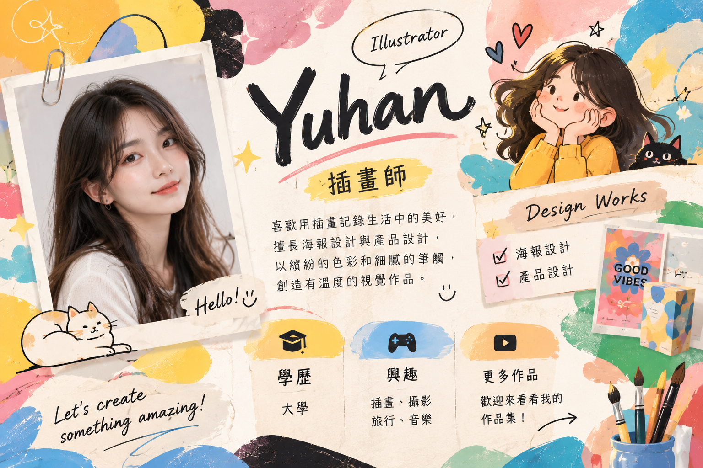
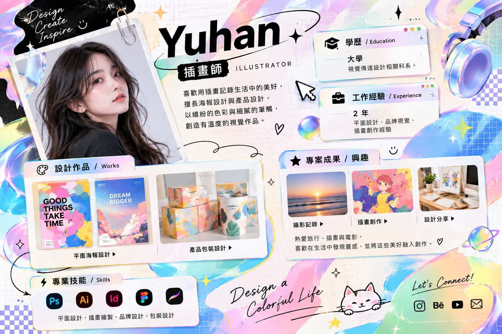
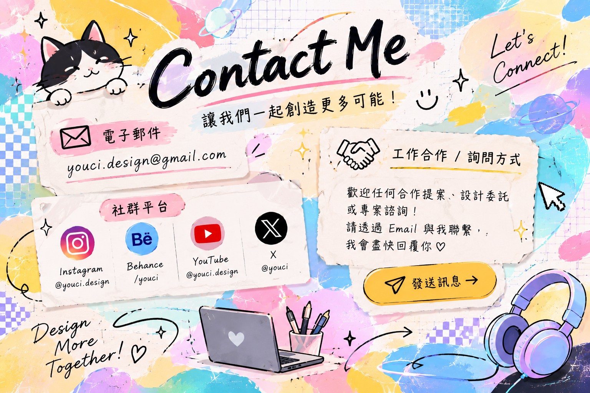
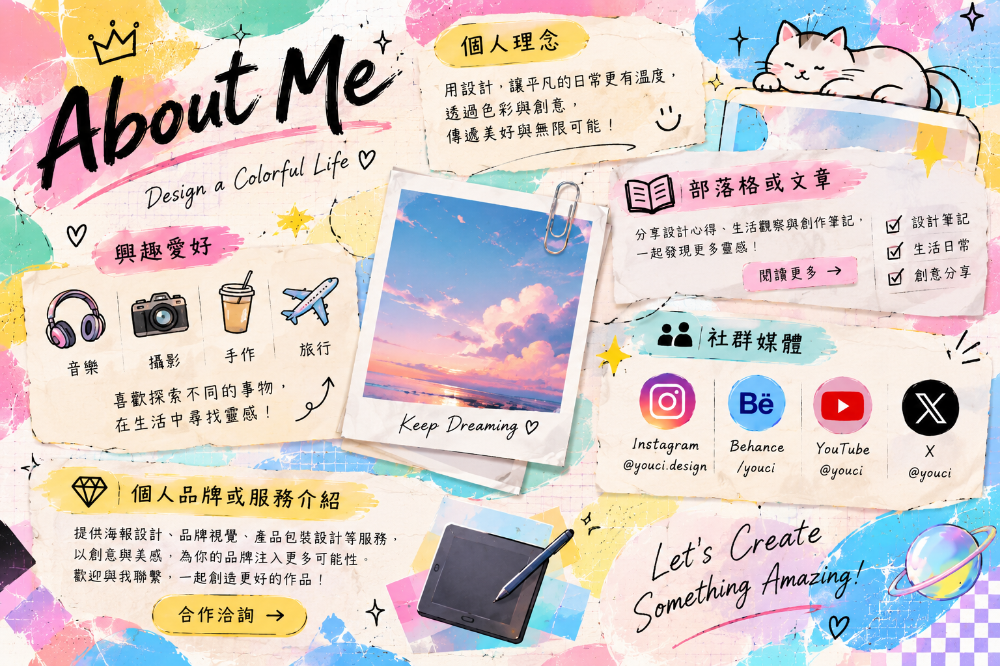

以故事為起點
先理解每個主題想傳達的訊息，再以真誠、清晰的視覺語言連結觀者。

About me
我是 Yuhan，一位喜歡觀察生活、把靈感化為畫面的插畫師。相信設計不只是視覺的呈現，也能傳遞情感，讓人與作品建立連結。
我的創作風格融合細膩線條、明亮色彩與生活感，擅長依照主題梳理故事，再以插畫和設計語言呈現。服務範圍包含插畫創作、海報設計、產品設計及產品包裝設計。
創作之外，我也喜歡逛展覽、旅行、閱讀與收集生活中的小細節，讓每一次發現都成為下一個作品的起點。

Selected works
從概念發想到視覺細節，記錄不同形式的創作實踐。

以春日植物與柔和色彩為靈感，為市集活動打造清新、友善的視覺識別。
描繪午後窗邊的日常片刻，以溫暖筆觸呈現安靜而自在的生活風景。

為茶點品牌規劃包裝插畫與版面，讓自然質感與品牌故事融入日常使用。
以簡潔造型與親切色彩發展生活選物概念，兼顧美感、實用與使用體驗。
運用層次色塊與手繪元素呈現夏夜氛圍，延伸應用於活動宣傳物。
從城市植物與散步路線取材，以連續插畫記錄探索街角的微小驚喜。
My journey
大學畢業，持續累積視覺設計、插畫創作與產品設計相關知識。
投入插畫與視覺設計工作，參與需求溝通、概念發展、設計執行及完稿流程。
完成海報、插畫、產品設計與產品包裝等不同類型專案，並依專案需求延伸視覺應用。
喜歡旅行、看展、閱讀與攝影，從日常觀察中收集靈感，持續練習與探索新的表現方式。
What I value
先理解每個主題想傳達的訊息，再以真誠、清晰的視覺語言連結觀者。
分享旅途中收集的色票、速寫與創作練習，記錄靈感從觀察到完成的過程。
透過 Instagram 分享插畫日常與作品進度，也歡迎交流想法與創作靈感。
提供插畫委託、海報視覺、產品設計及包裝設計服務，依專案需求討論合適方案。
Let's work together
有合作想法、委託需求或任何問題，歡迎來信或透過社群與我聯繫。
合作詢問請來信簡述專案內容、預計時程與聯絡方式，我會盡快回覆。